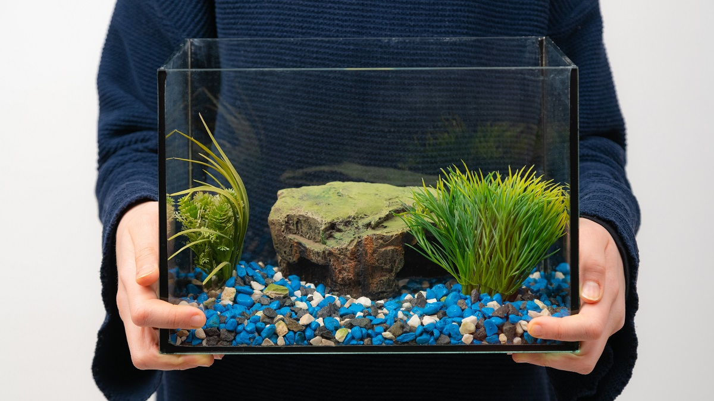

1Choose the Right Size
A single fancy goldfish needs 20 gallons; add 10 gal for each extra fish. A roomy tank dilutes toxins and gives tails space to fan out.
A single fancy goldfish needs 20 gallons; add 10 gal for each extra fish. A roomy tank dilutes toxins and gives tails space to fan out.
Wash with lukewarm water only. Soap leaves residues that can burn gills. Swirl gravel until the water runs clear.
Target a 6-8x turnover of tank volume per hour. Slip a sponge on the intake so flowing fins don’t get sucked in.
Fill the tank, then dose a de-chlorinator that neutralises chlorine and chloramine. Aim for 68-74 °F (20-23 °C) for fancies.
Feed a pinch of food daily or add bottled bacteria. Wait until ammonia = 0 and nitrite = 0 ppm—usually 2-3 weeks.
Add hardy greens like Anubias, Hornwort or floating Duckweed. Plants absorb nitrates and give goldies something to explore.
Float the bag 15 min, add a cup of tank water every 5 min, then net the fish in. Discard store water to keep pathogens out.